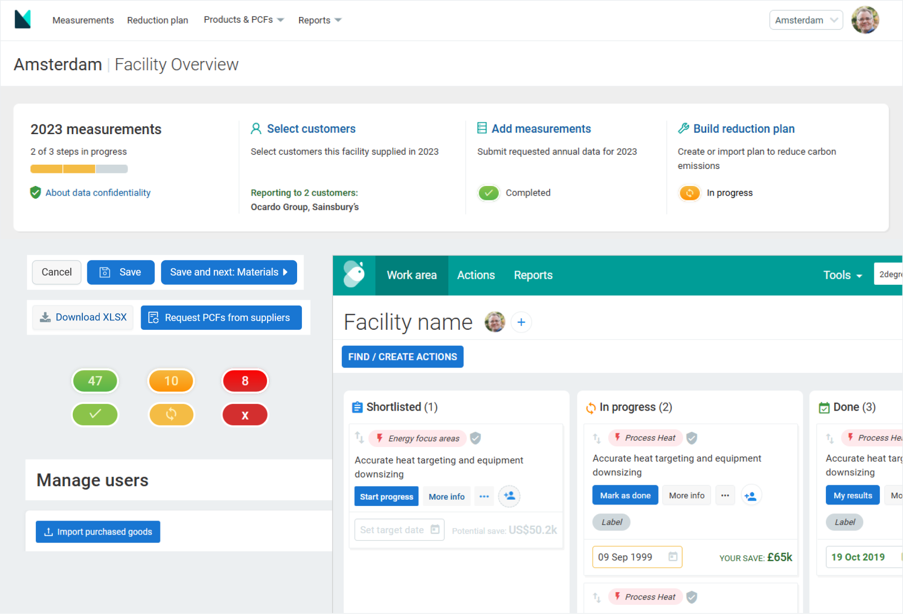

M2030 Design System
Manufacture 2030 (M2030) is B2B scale up working in the sustainability space. As the company matured, it went through many changes in its brand, and product offerings. This meant a lot of quick adaptations for the underlying platform design, in a a race to evolve alongside the business.
For a time this was working. The product was relatively simple; the team was small; and it was easy for everyone to have a shared understanding of the design intention. But as M2030 grew its core features and expanded it teams, it became increasingly difficult to align that understanding, and inevitably we began to see more inconsistencies in the platform.

- Stakeholders became uncertain of the ‘correct’ design.
- For users, it appears as a ‘crack’ in the system, potentially eroding trust.
- For designers, well considered designs are sometimes wasted, as the same components are created over and over again.
- Allow product design to adapt quickly to the latest branding / experiments.
- Align design understanding between core stakeholder.
- Ensure consistent use of components across features and teams.
- Design system aligned with latest brand identity
- Token based system allow for high adaptability
- Increase alignment and consistency of design intention for design and engineering team members.
- Secondary Axure based systems created.
- User interface design
- Design system
Initial considerations
Brand alignment
Having been through multiple platform rebrands, elements of the UI design unfortunately lagged behind, and subtle changes are needed to catch up with the latest branding and provide a unified experience across the business.

Adaptability
While growth brought more stability to M2030’s brand and product, an adaptable system remains essential since:- Sustainability is still a developing sector where continual adaptation are to be expected as new technology and legislations emerges.
- Experimentation is in the DNA of the company to explore new ways to help manufacturers reduce their environmental impact.
- A clear hierarchical system that consist of:
- The foundations - defining the smallest design building block.
- Base components - the most basic recognisable UI elements.
- Feature components - complex components that have specific usage context.
- Using semantic tokens that clearly communicate use cases to engineers and designers. Structured in a way and can propagate changes quickly at different levels.
Responsiveness
While as a B2B platform, M2030’s users are primarily desktop based (Estimated to be 94% based on users screen-size data - Q4 2024). It remains important to keep an eye on providing a flexible design system when looking to future developments, and maintain a well crafted front end when viewed in less used systems to maintain user’s trust.
Accessibility
Accessibility is an oft-forgotten aspect when implementing fast pace designs. A lot of thought were put into this in the original M2030 designs, and a new system should ensure that they are incorporated, and make the implementation of accessible UIs seamless for designers and engineers.
The Foundations
The atomic building blocks of the M2030 design system, the foundation setup the general look and feel of the platform overall, through the definition of:
Colour palette
Based on the latest branding and typical validation needs of a B2B platform. The colour palette defined all the colour options available for the platform UI.
Setup with accessibility in mind, in general these colours can be pair either black or white text to satisfy colour contrast requirements.

Spacing
Define the general spacing of elements within the platform, the spacing tokens act to establish the ‘rhythm and feels’ of the platform.

Typography
Selection of readable fonts and defining well differentiated headings helps to establish clear hierarchy in the platform.

Base components
Having established the foundation, we then worked on the base components. These are individual UI components that often mirror standard html elements. Which can then be used to build practical UIs and context specific feature components as needs arises.
Buttons
Button component designed to maximise flexibility, covering four types of usage in different states, and supporting usage with and without icons.

Tables
A component of table cells, covering full structure of standard tables, and icon usage in header and body cells.

Feature components
The base components above are then used to create feature-level components. That are global / repeated features, used to answer contextual needs within M2030.
Site navigation
The top level global navigation. Constructed using base components like dropdowns and profile plates, with responsive styling to support mobile devices.

Page header
Designed to support a large variety of existing, and potential use cases. The page header component provide flexibility to create a simple header that only consist of the page title, or one that include many interactive elements.

Project cards
Support usage within ‘Reduction plans’ created by users. Representing improvement project chosen by the users. The component makes use of base components like buttons, profile plates, drop down, and pill labels.

Results
Initial implementation
The structure of Foundation > Base > Feature components of the M2030 design system means that changes can be controlled via variables at different levels.
With considered decisions, design change can either by propagated quickly across the entire platform design by updating the foundation tokens; or customised for an individual component by creating a feature component specific variable.
The initial distribution of the system have clearly helped align understanding of the designs, with less confusion highlighted by the core stakeholders, and made it easier for designers to create consistent, well crafted UIs.
What's next?
The design system still new to M2030, and as the business grows it will surely present more challenges for the system to adapt and change. This initial implementation should serve as a good starting point for further expansion, and continue to help align stakeholders understanding of design decisions going forward.